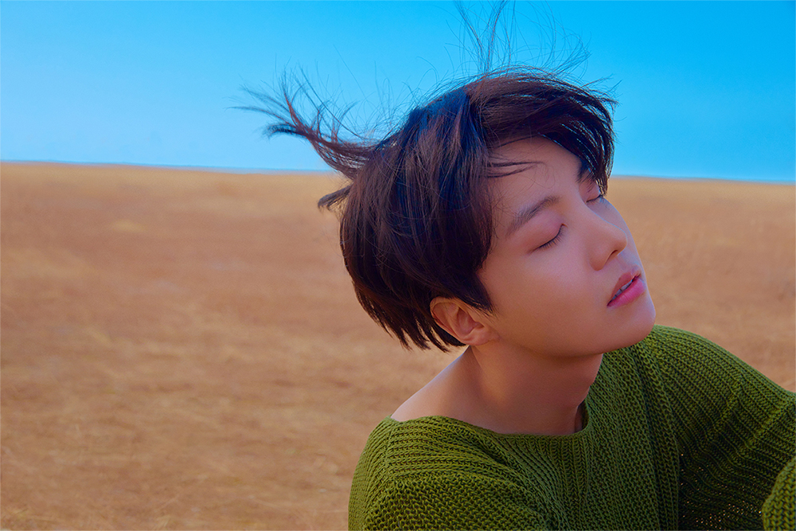
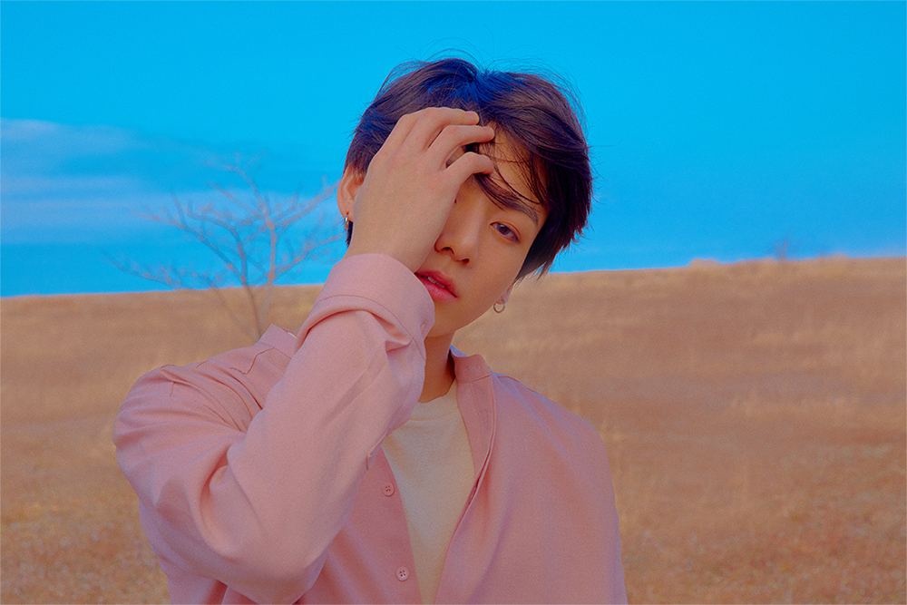
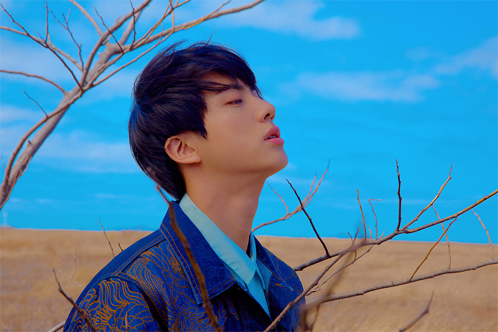
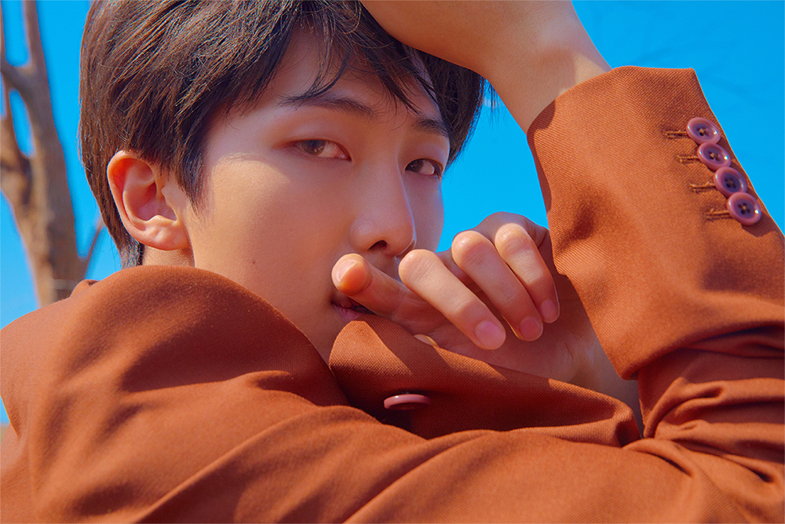
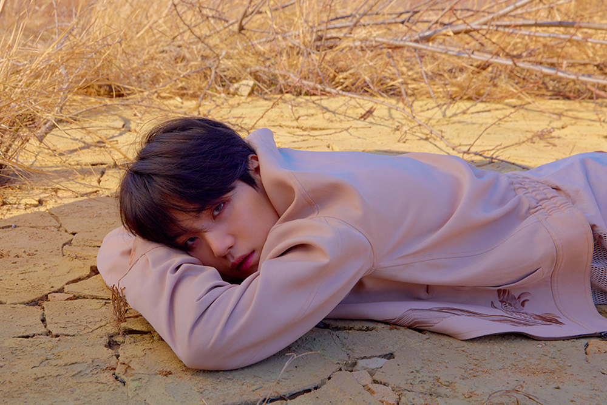
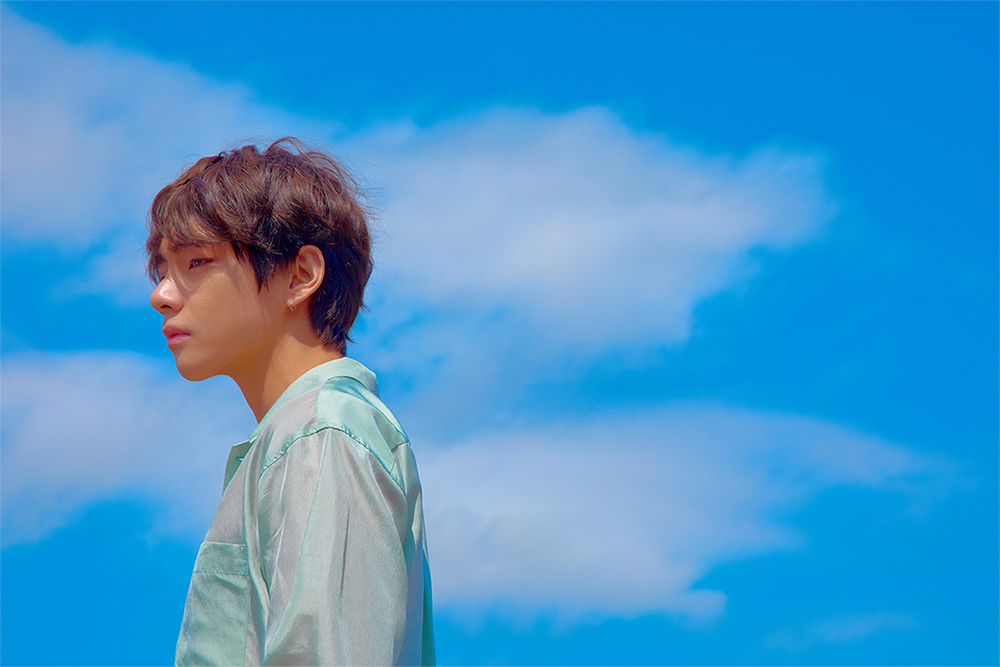

Love Yourself 轉 'Tear' es el segundo álbum del concepto «Love Yourself»
que empezó en 2017 con el lanzamiento del EP Love Yourself: Her.
La promoción empezó el 6 de abril de 2018 con la publicación de
«Euphoria: Theme of Love Yourself 起 Wonder»
un vídeo que conecta las historias de sus vídeos musicales anteriores
incluye una nueva canción, «Euphoria»
que es un solo de Jungkook
El 16 de abril de 2018 anunciaron a través de su cuenta oficial
en FanCafe que lanzarían su tercer álbum de estudio en mayo
y que la preventa sería a partir del 18 de abril.3
El álbum explorará temas relacionados al dolor y la tristeza
que trae la separación.4
El 6 de mayo de 2018 publicaron el tráiler promocional con la canción de apertura del álbum
«Singularity», la cual es un solo de V.






Intro: Singularity
Fake Love
The True Untold (Ft. Steve Aoki)
134340
낙원
Love Maze
Magic Shop
Airplane Pt.2
Anpanman
So What
Outro:Tear